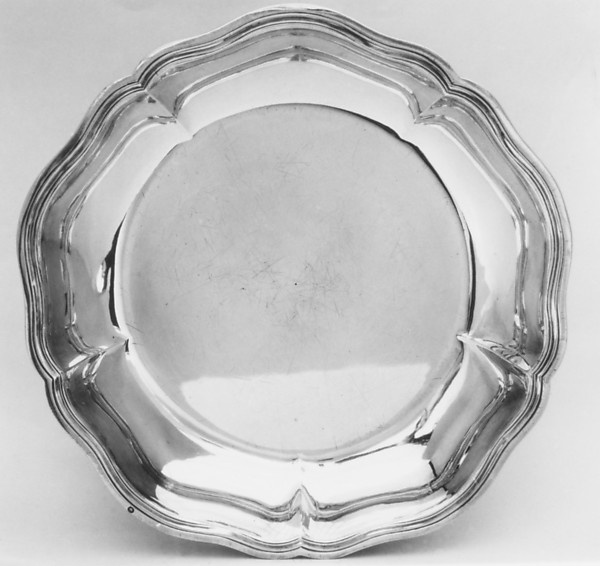

Study 02 · 11 October 2026Top view / dimensions
The edge in the record
Drag the face-on photograph toward the ratio of the listed dimensions.

PhotographDimension ratio
UnchangedCompressed
Drag the face-on photograph toward the ratio of the listed dimensions.
